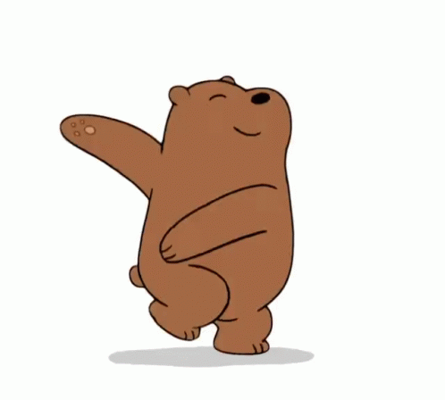

In light of the rising frequency of human/grizzly bear conflicts, the Montana Department of Fish and Game is advising hikers, hunters, and fishermen to take extra precautions and keep alert for bears while in the field. We advise that outdoorsmen wear noisy little bells on their clothing so as not to startle bears that aren't expecting them. We also advise outdoorsmen to carry pepper spray with them in case of an encounter with a bear. It is also a good idea to watch out for fresh signs of bear activity. Outdoorsmen should recognize the difference between black bear and grizzly bear poop. Black bear poop is smaller and contains lots of berries and squirrel fur. Grizzly bear poop is larger and has little bells in it and smells like pepper.
